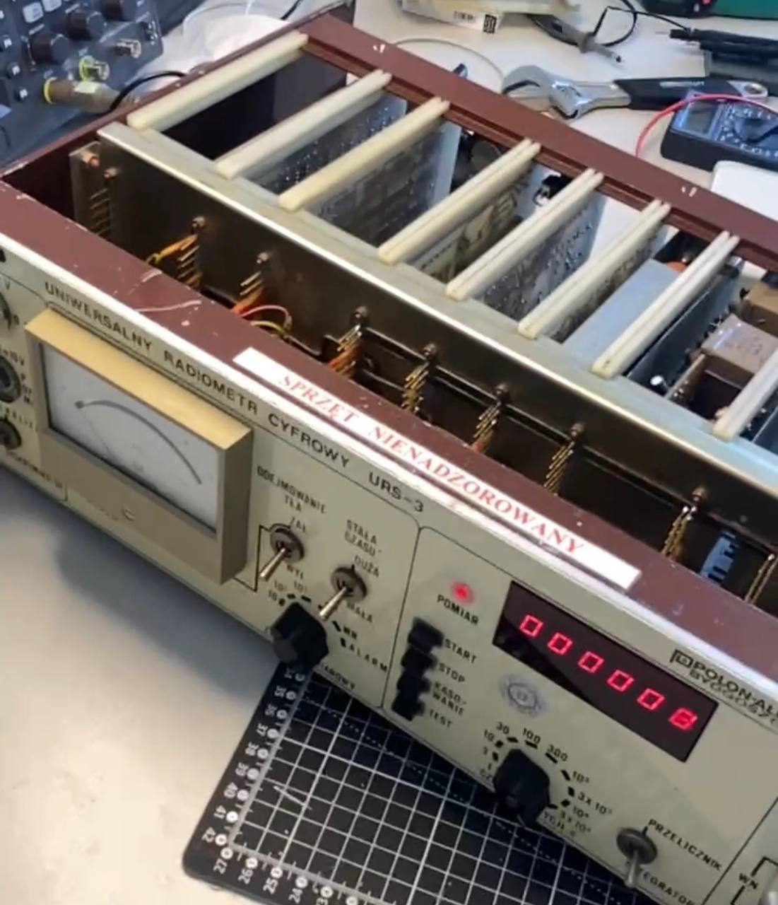
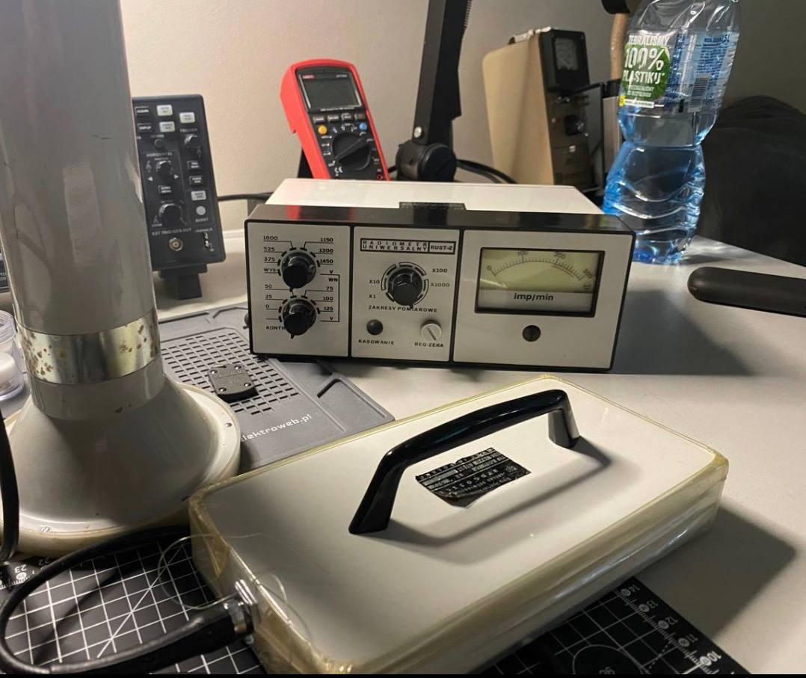

// 2019 - Present (sporadic repairs)
▸ Vintage Radiometer Restoration Project
Restoration of classic Polish dosimetry equipment: RUSTPolon Alpha detectors,
URS-3, SAPOS-90, and vintage HP oscilloscopes. Gained hands-on experience with legacy circuits,
integrated memory response analysis, high-voltage module repairs, amplification and counting circuits.


High Voltage Electronics
Signal Amplification
Counting Circuits
Dosimetry
Nuclear Radiation Monitoring